Réservation de moto-taxi à Paris et en Île-de-France : ce que font les clients, les chauffeurs, les entreprises et l'équipe Izymoto sur izymoto.com.
Version du 13 octobre 2026 — décrit izymoto.com tel qu'en production depuis le 13 octobre 2026 (phase 0 : sécurité, grille tarifaire, espace entreprise ; lot 1.1 : réservation à l'avance).
Toutes les captures proviennent de l'environnement de test (staging) avec des comptes et des données fictifs : aucune donnée réelle de client ou de chauffeur n'apparaît dans ce document.
Sommaire
Présentation et tarifs
Réserver une course
Mon compte
Espace chauffeur
Back-office Izymoto
Entreprises
Sécurité et données personnelles
Bientôt disponible
Annexe — corrections à prévoir
Comment ce guide a été vérifié. Chaque écran a été ouvert sur la prévisualisation staging avec un compte fictif par rôle (client, chauffeur validé, chauffeur en attente, administrateur, responsable et collaborateur d'entreprise). Les règles de calcul (prix, majorations, paiement, accès aux données) sont en plus couvertes par les tests automatiques du projet. Ce qui n'existe pas encore est regroupé au chapitre 8, et les défauts constatés en annexe.
1. Présentation et tarifs
Izymoto est un service de moto-taxi avec chauffeur à Paris et en Île-de-France : transferts vers les aéroports (Roissy-CDG, Orly, Le Bourget, Beauvais), trajets en ville, La Défense et Disneyland Paris. Le client réserve et paie en ligne ; la course est ensuite proposée aux chauffeurs partenaires.
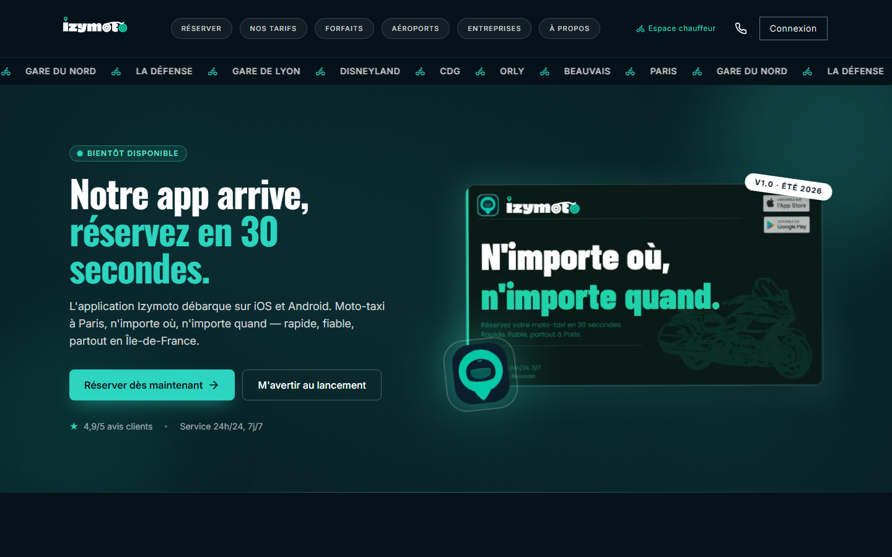
Page d'accueil (ordinateur).
Forfaits par trajet
Le prix est un forfait fixe par couple de zones, valable dans les deux sens, quel que soit le trafic. Ce sont les montants réellement appliqués par le site au moment du paiement.
Trajet
Forfait
Paris ↔ Paris
46 €
Paris ↔ La Défense
50 €
Paris ↔ Le Bourget
65 €
Paris ↔ Petite couronne (92, 93, 94)
70 €
Paris ↔ Orly
76 €
Paris ↔ Roissy-CDG
99 €
La Défense ↔ Roissy-CDG ou Orly
99 €
La Défense ↔ Le Bourget
80 €
Roissy-CDG ↔ Le Bourget
60 €
Paris ↔ Disneyland Paris
110 €
Roissy-CDG ↔ Disneyland Paris
120 €
Orly ↔ Disneyland Paris
130 €
Roissy-CDG ↔ Orly
139 €
Beauvais ↔ La Défense
170 €
Beauvais ↔ Paris
180 €
Suppléments (montants fixes)
Situation
Supplément
Départ le soir ou tôt le matin (20 h–23 h ou 6 h–7 h)
+20 €
Départ de nuit (23 h–6 h)
+40 €
Départ le samedi ou le dimanche
+20 €
Départ dans moins de 2 heures
+20 €
Option « priorité » (obligatoire pour un départ dans moins de 1 h 15)
+20 €
Les heures s'entendent à l'heure de Paris. Les suppléments se cumulent et sont affichés en détail avant le paiement.
Trajets hors forfait
Si le couple de zones ne figure pas dans la grille (grande couronne, adresse imprécise…), le site ne propose pas de paiement en ligne : le client envoie une demande de devis et l'équipe Izymoto le recontacte. La mise à disposition à l'heure (95 € l'heure, 320 € les 4 heures, 580 € la journée) se réserve aussi sur demande.
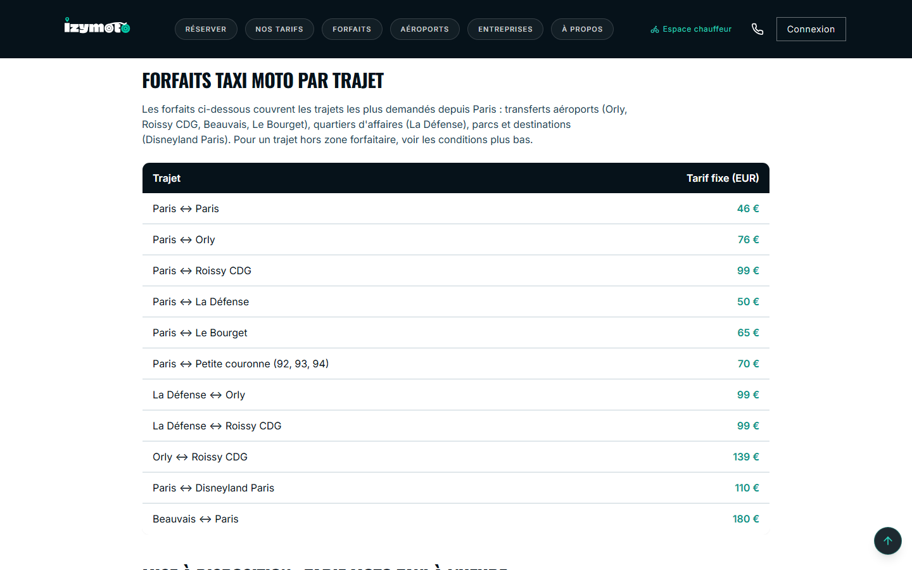
Page « Nos tarifs » : la grille des forfaits. Voir l'annexe pour les quelques montants de cette page à harmoniser.
2. Réserver une course
La réservation se fait depuis la section « Réservez votre taxi moto » de la page d'accueil.
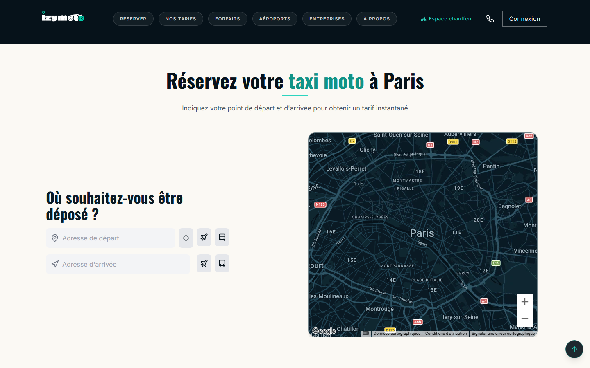
Formulaire de réservation (ordinateur).
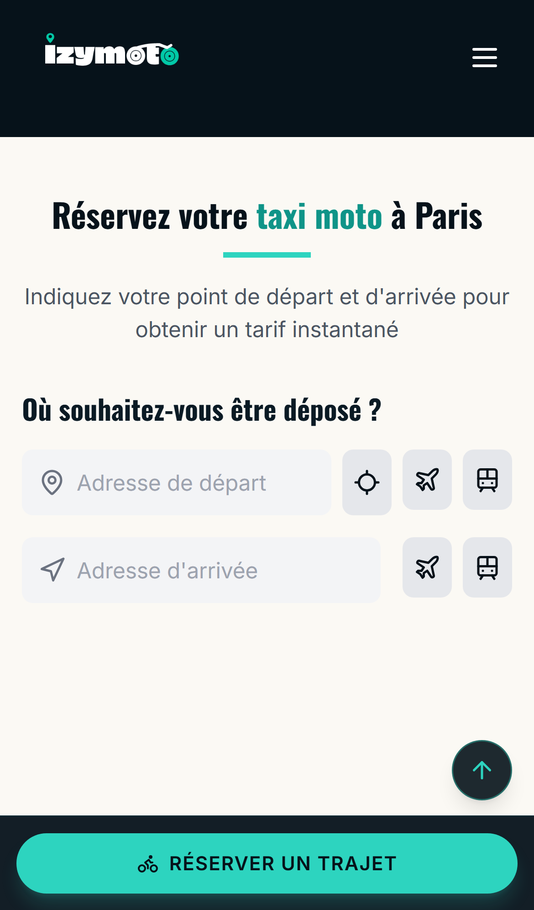
Sur téléphone.
Les étapes
Adresses. Le client saisit le départ et l'arrivée (raccourcis aéroports, gares et « ma position »). L'itinéraire s'affiche sur la carte.
Devis instantané. Le site indique le forfait, les suppléments éventuels et le total. La date et l'heure de départ sont obligatoires (au moins 15 minutes à l'avance, au plus un an). Pour un départ dans moins de 1 h 15, l'option priorité est obligatoire.
Connexion. Pour réserver, il faut un compte. Un visiteur non connecté peut seulement demander un devis : sa demande est transmise à l'équipe Izymoto, qui le recontacte.
Téléphone. Si le compte n'a pas encore de numéro de téléphone, le site le demande avant le paiement (le chauffeur en a besoin).
Paiement (voir ci-dessous), puis page de confirmation. La réservation apparaît aussitôt dans « Mon compte ».
Moyens de paiement
Carte bancaire. Le montant est réservé sur la carte (empreinte), pas débité. Il n'est encaissé qu'après la course, par l'équipe Izymoto. Si la course est annulée, l'empreinte est levée sans frais. Le paiement passe par Stripe, y compris la validation 3-D Secure de la banque.
Portefeuille Izymoto (forfaits prépayés, voir ci-dessous) : proposé quand le solde couvre la course ; le montant est débité du solde.
Portefeuille entreprise : pour un collaborateur rattaché à une société, la course est débitée du solde de l'entreprise, dans la limite de son budget mensuel (chapitre 6).
Le prix payé est toujours recalculé par le serveur à partir des adresses et de la date : un montant modifié dans le navigateur n'est jamais accepté.
Réserver plusieurs jours à l'avance
Pour une course prévue 5 jours ou plus après la réservation, aucun montant n'est bloqué tout de suite : le client enregistre sa carte (avec la validation 3-D Secure de sa banque) et le montant est réservé automatiquement 3 jours avant la course. Une empreinte bancaire n'étant valable que 7 jours, c'est ce qui garantit le paiement des courses réservées longtemps à l'avance.
Si la banque refuse ou demande une confirmation, le client reçoit un e-mail avec un lien « Confirmer le paiement » ; l'équipe Izymoto est alertée et une nouvelle tentative a lieu chaque matin.
La carte reste enregistrée pour les prochaines réservations ; sa suppression se demande à contact@izymoto.com.
Le paiement mixte portefeuille + carte n'est pas possible pour ces courses.
Les forfaits prépayés (portefeuille)
Le client peut recharger son portefeuille et recevoir un bonus. La recharge est payée par carte via Stripe ; le crédit (recharge + bonus) est disponible dès la confirmation du paiement.
Palier
Vous payez
Bonus
Crédit total
Essai
100 €
+5 €
105 €
Régulier
250 €
+25 €
275 €
Habitué
500 €
+75 €
575 €
Premium
1 000 €
+200 €
1 200 €
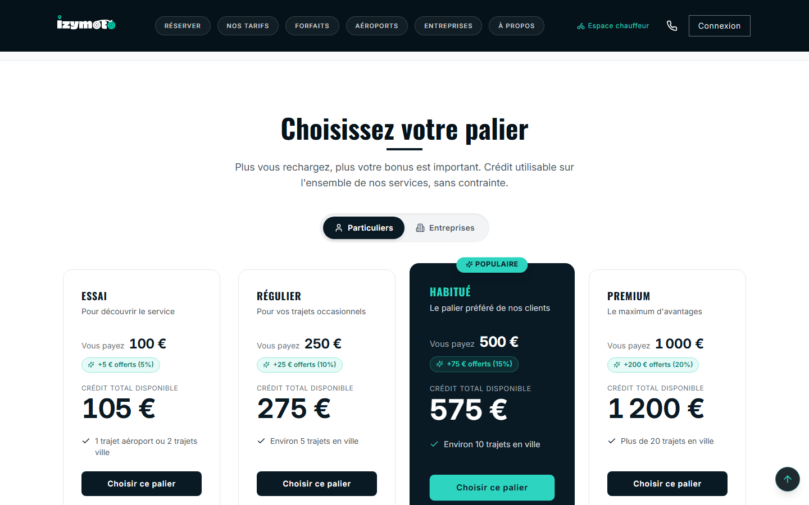
Page « Forfaits » : choix du palier de recharge.
Annuler une course
Le client ne peut pas annuler lui-même depuis son compte : il contacte Izymoto (téléphone ou e-mail), et l'équipe annule la réservation depuis le back-office, ce qui lève l'empreinte bancaire.
3. Mon compte
Créer un compte et se connecter
Inscription par e-mail et mot de passe, ou connexion avec Google.
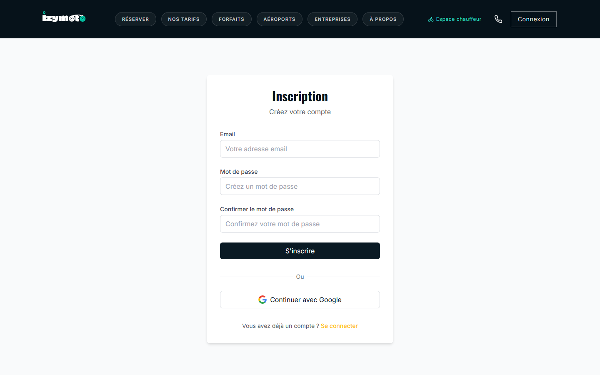
Inscription.
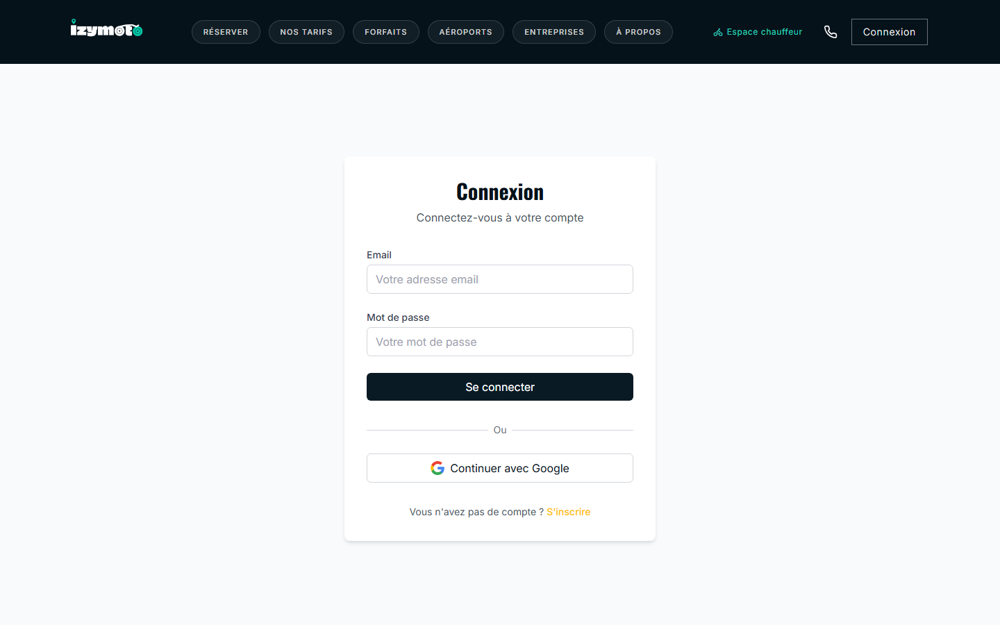
Connexion.
Mon profil
La page « Mon profil » regroupe :
les coordonnées (nom, e-mail, téléphone), modifiables ;
le solde du portefeuille, avec un lien vers son historique ;
l'accès à l'espace entreprise ;
Mes réservations, avec pour chacune le trajet, la date, le moyen de paiement, le prix et l'état : devis, recherche chauffeur, chauffeur trouvé, terminée, annulée ;
la suppression du compte (confirmation par mot de passe).
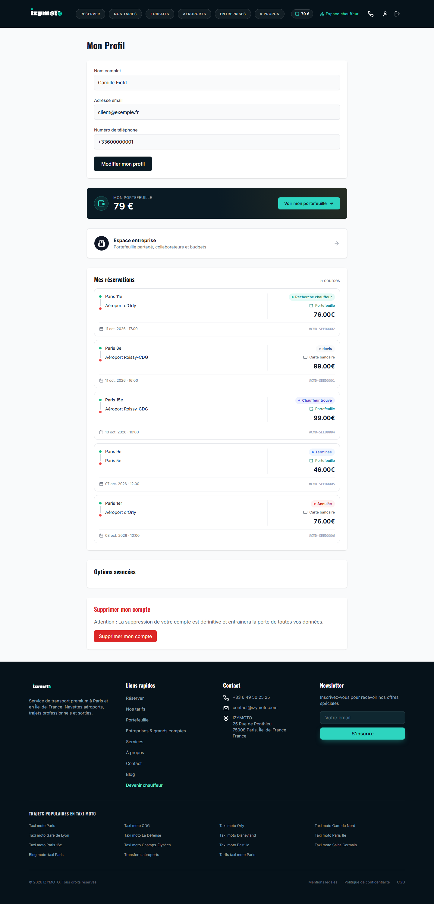
« Mon profil » d'un client fictif : coordonnées, portefeuille et réservations.
Mon portefeuille
Solde disponible, total rechargé et historique de chaque mouvement (recharge, course payée) avec le solde après opération.
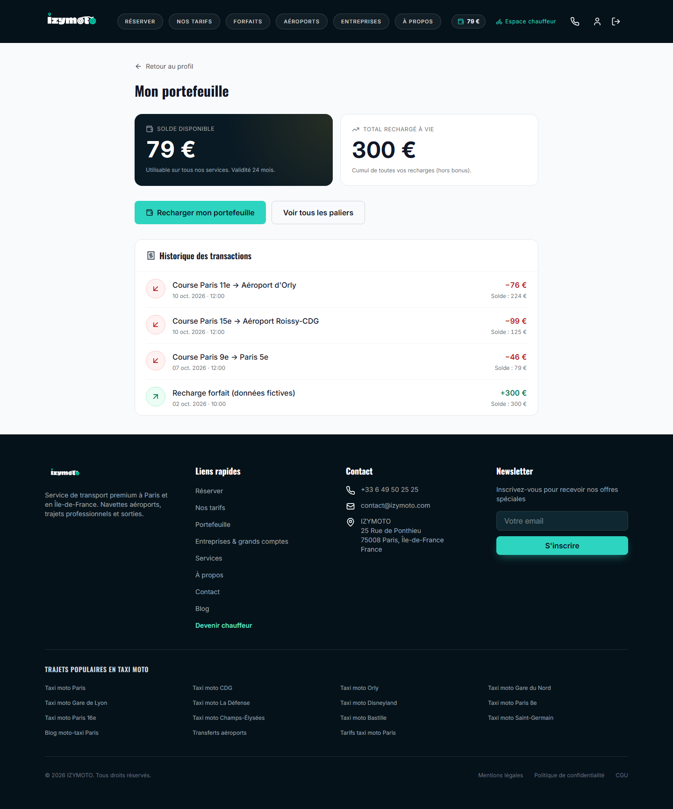
Historique du portefeuille.
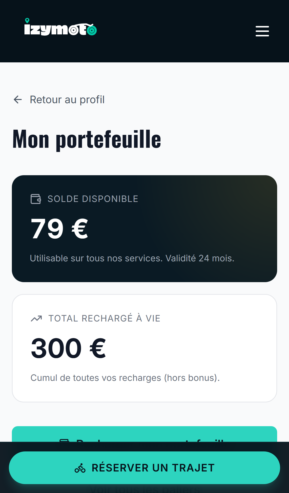
Sur téléphone.
4. Espace chauffeur
Les chauffeurs sont des professionnels indépendants (auto-entrepreneur, SASU, EURL…). Leur espace « Izymoto Pro » est séparé de l'espace client.
Devenir chauffeur
L'inscription se fait en 5 étapes : compte, identité et structure (SIRET, permis), moto, coordonnées bancaires, documents. Documents obligatoires : pièce d'identité, permis A/A2, carte grise, attestation d'assurance et RIB (PDF, JPEG, PNG ou HEIC, 10 Mo maximum). La photo de la moto est facultative.
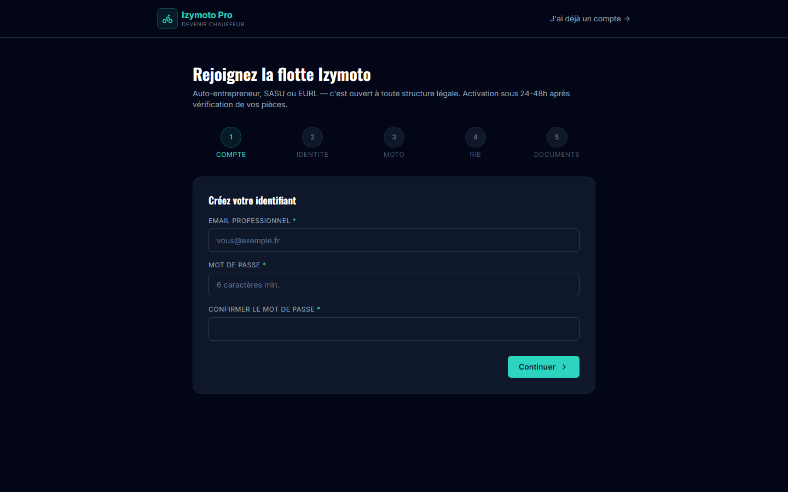
Inscription chauffeur, étape 1 sur 5.
Le dossier est ensuite vérifié manuellement par l'équipe Izymoto. Tant qu'il n'est pas validé, le chauffeur voit un bandeau « Dossier en cours de validation » et n'a pas accès aux courses.
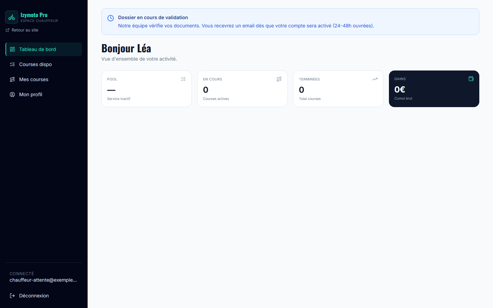
Tableau de bord d'un chauffeur dont le dossier est en attente.
Recevoir des courses
Un chauffeur validé passe « En service » pour voir les courses disponibles en temps réel. Le premier qui accepte une course l'obtient ; elle disparaît alors pour les autres. Chaque course indique la date, le trajet, la distance et la part du chauffeur.
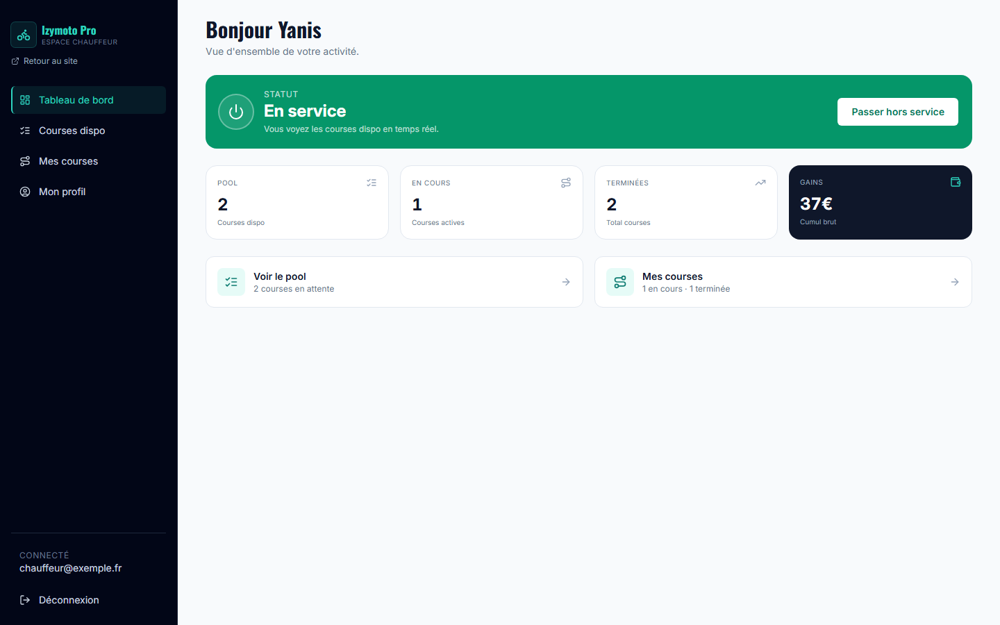
Tableau de bord : statut, courses disponibles, en cours, terminées et gains.
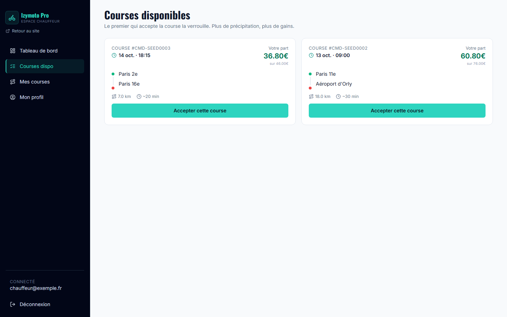
Courses disponibles.
Réaliser la course
Dans « Mes courses », le chauffeur retrouve le téléphone du client, puis :
Démarrer au début de la course ;
Terminer à l'arrivée ;
Libérer s'il ne peut plus l'assurer : il indique un motif et la course retourne aux autres chauffeurs.
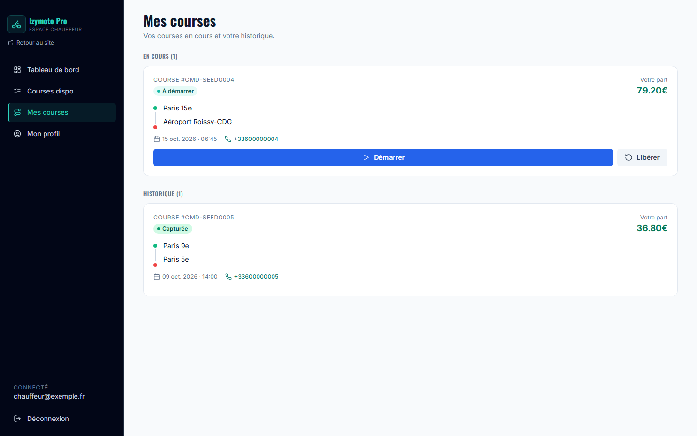
« Mes courses » : course à démarrer et historique.
Rémunération
Le chauffeur perçoit 80 % du prix de la course. Izymoto conserve 20 % de commission. Le cumul des gains bruts est affiché sur le tableau de bord. Les versements aux chauffeurs ne sont pas gérés dans l'application (chapitre 8).
Mon profil chauffeur
Le chauffeur met à jour ses informations, sa moto, ses coordonnées bancaires et ses documents. Une modification peut nécessiter une nouvelle validation.
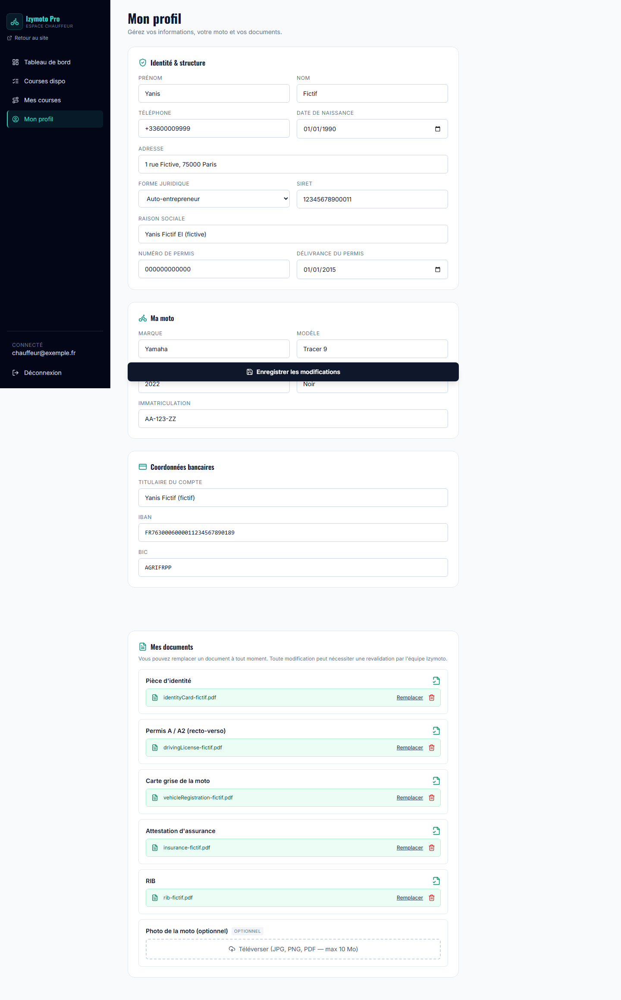
Profil d'un chauffeur fictif.
5. Back-office Izymoto
Réservé aux administrateurs Izymoto. Il est accessible depuis le site une fois connecté avec un compte administrateur.
Tableau de bord
Nombre de réservations, de comptes et volume total, solde en circulation dans les portefeuilles, dernières réservations.
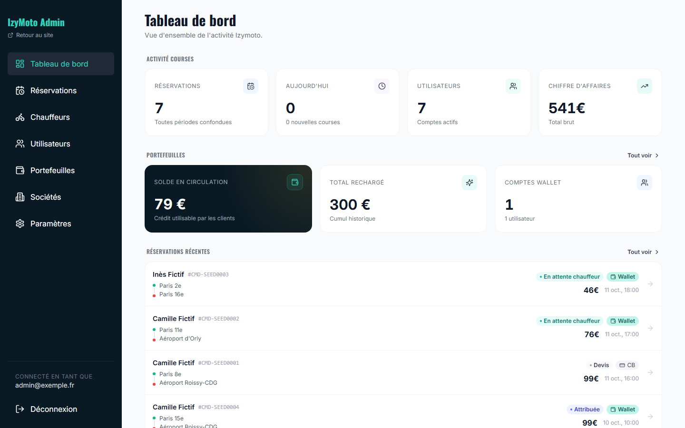
Tableau de bord administrateur.
Réservations
Liste de toutes les réservations : client, téléphone, trajet, état, moyen de paiement et prix. Depuis la fiche détaillée d'une réservation payée par carte, l'administrateur peut :
Capturer le paiement, c'est-à-dire encaisser l'empreinte après la course ;
Annuler l'empreinte, ce qui annule la course sans frais pour le client.
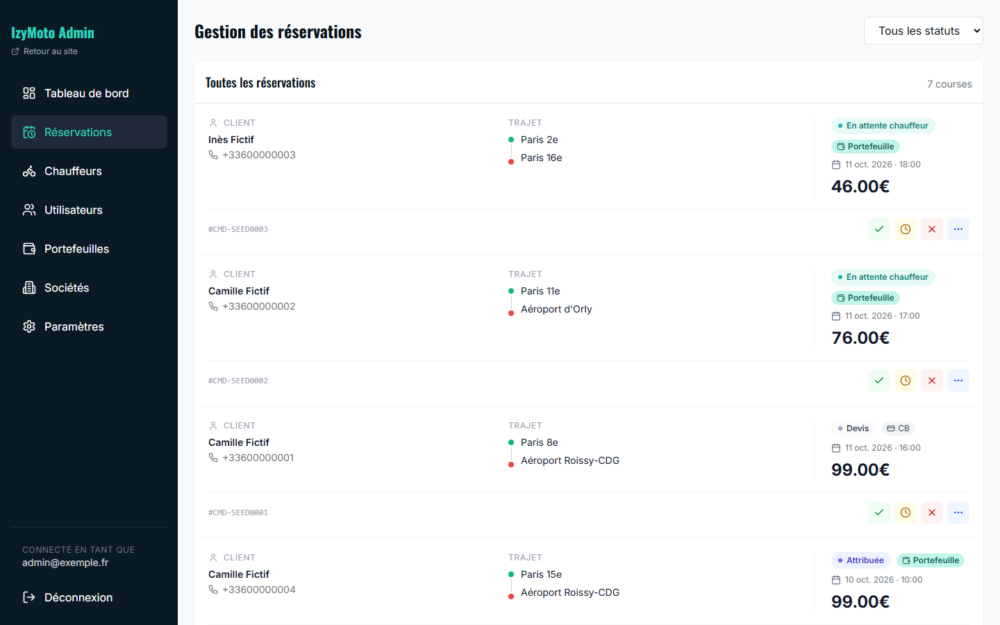
Gestion des réservations.
Chauffeurs
Liste filtrable (en attente, validés, suspendus, refusés). La fiche d'un chauffeur présente son identité, sa moto, ses coordonnées bancaires et ses documents, consultables en un clic. Elle permet de valider le compte, de le refuser ou de le suspendre (avec un motif), puis de le réactiver.
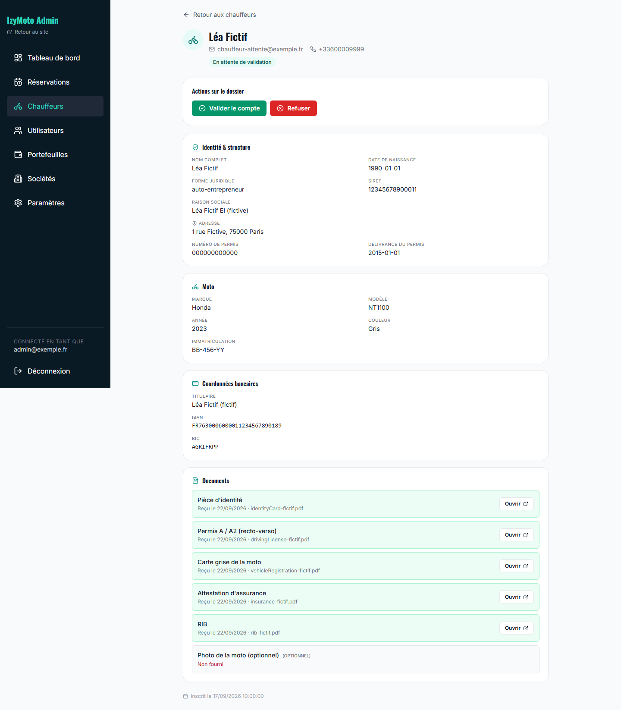
Dossier d'un chauffeur en attente de validation (documents fictifs).
Utilisateurs, portefeuilles et sociétés
Utilisateurs : recherche et attribution du rôle administrateur.
Portefeuilles : soldes des clients, historique et ajustement manuel du solde (crédit ou débit).
Sociétés : solde, collaborateurs et leur budget, historique consolidé, et bouton « Créditer le solde » pour enregistrer une recharge par virement ou un geste commercial.
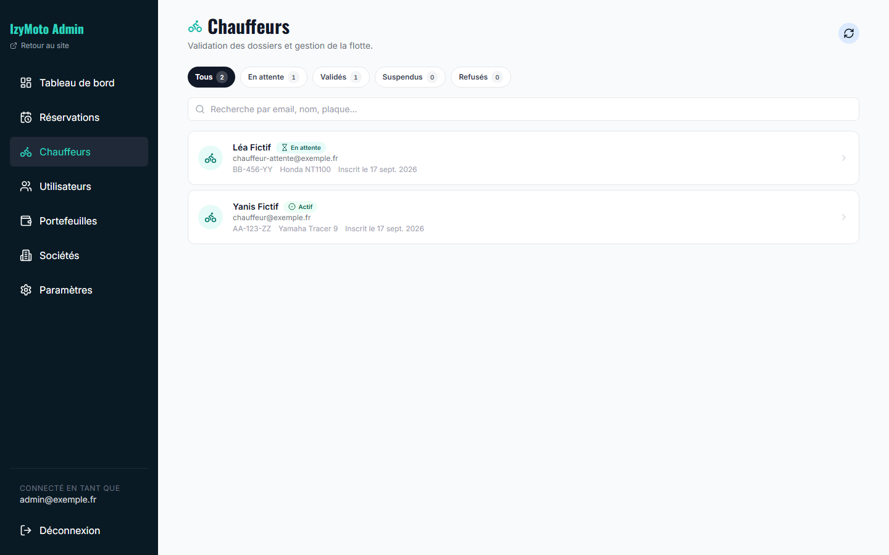
Liste des chauffeurs.
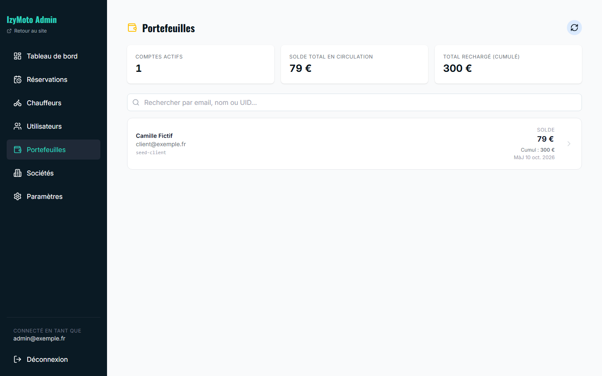
Portefeuilles clients.
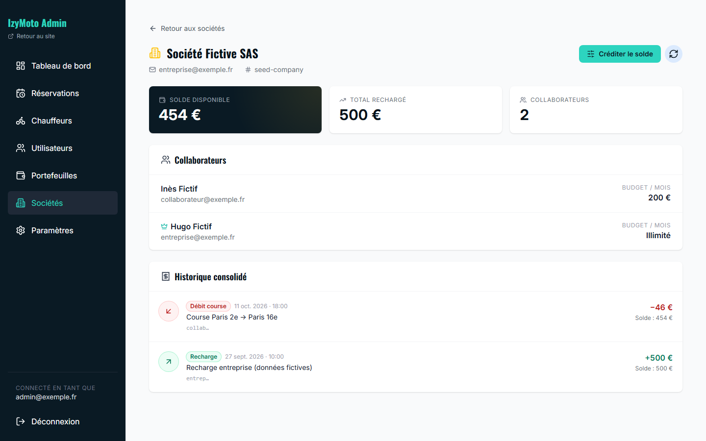
Fiche d'une société fictive vue par l'administrateur.
6. Entreprises
Une entreprise dispose d'un portefeuille partagé que ses collaborateurs utilisent pour réserver, chacun avec un budget mensuel.
Le responsable du compte
crée l'espace entreprise depuis « Mon profil » ;
recharge le portefeuille de la société avec un palier entreprise (tableau ci-dessous), ou par virement enregistré par Izymoto ;
invite des collaborateurs par e-mail ; le lien d'invitation est valable 14 jours ;
fixe pour chacun un budget mensuel (ou illimité), le modifie, ou retire un collaborateur.
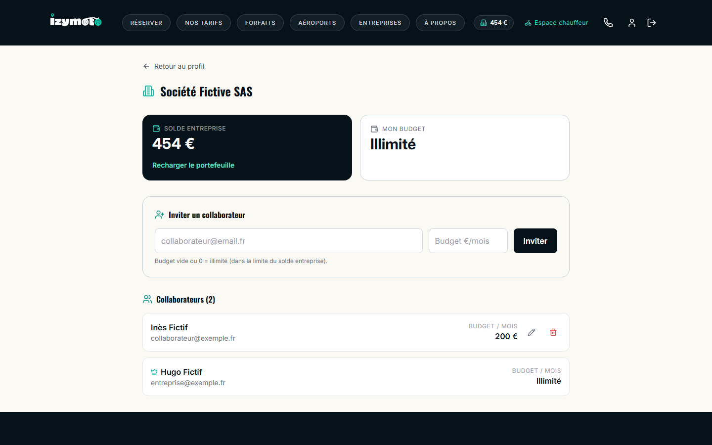
Espace entreprise vu par le responsable.
Le collaborateur
Il accepte l'invitation avec un compte dont l'e-mail est vérifié et identique à celui invité. Il voit le solde de la société et son budget restant pour le mois, puis réserve normalement : la course est payée par l'entreprise. Une course qui dépasserait son budget est refusée. Le budget repart à zéro chaque mois.
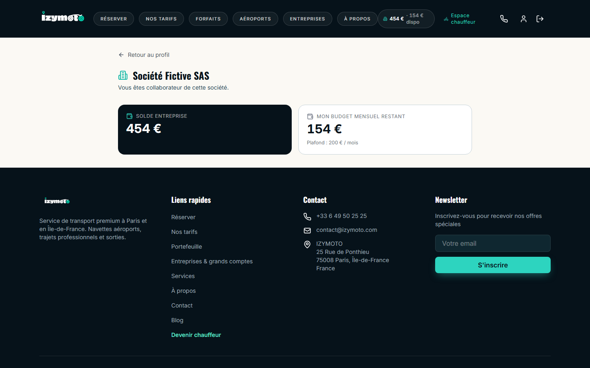
Espace entreprise vu par un collaborateur (budget 200 €/mois).
Paliers entreprise
Palier
Recharge
Bonus
Crédit total
TPE
1 000 €
+50 €
1 050 €
PME
2 500 €
+250 €
2 750 €
Business
5 000 €
+750 €
5 750 €
Premium
10 000 €
+1 800 €
11 800 €
Enterprise
25 000 €
+5 000 €
30 000 €
Seul le responsable du compte peut recharger le portefeuille de la société depuis le site.
7. Sécurité et données personnelles
Qui voit quoi
Donnée
Accès
Réservations d'un client
le client concerné et les administrateurs
Courses disponibles
les chauffeurs validés et en service uniquement
Course acceptée (téléphone du client)
le chauffeur qui l'a acceptée
Documents d'un chauffeur
le chauffeur lui-même et les administrateurs
Portefeuille et historique
son titulaire (ou les membres de la société) et les administrateurs
Ces règles sont appliquées par la base de données elle-même, pas seulement par l'affichage, et elles sont vérifiées par plusieurs centaines de tests automatiques à chaque modification.
Paiement
Les données de carte sont saisies dans le formulaire sécurisé de Stripe : Izymoto ne les voit ni ne les stocke.
Le montant est calculé par le serveur, jamais repris du navigateur.
Les opérations sensibles (encaissement, remboursement, crédit d'un portefeuille) passent par le serveur et sont réservées aux administrateurs ou confirmées par Stripe.
Documents des chauffeurs
Les pièces sont stockées dans un espace privé. Un document déposé ne peut pas être écrasé, et seuls les types et tailles autorisés sont acceptés.
Données personnelles (RGPD)
Données collectées : identité, e-mail et téléphone des clients ; trajets et dates ; pour les chauffeurs, identité, structure, moto, IBAN et pièces justificatives.
La suppression du compte depuis « Mon profil » ferme l'accès. Les réservations et les mouvements de portefeuille sont conservés : ce sont des pièces comptables.
Une demande d'accès, de rectification ou de suppression complète se fait par e-mail à contact@izymoto.com.
8. Bientôt disponible
Ces fonctions sont prévues ou annoncées mais pas encore disponibles sur le site :
Application mobile iOS et Android.
Facturation : facture téléchargeable par le client, facture mensuelle consolidée pour les entreprises.
Entreprises : trajets récurrents, interlocuteur dédié, reporting et export des dépenses, historique consolidé visible par le responsable.
Réservation en ligne de la mise à disposition à l'heure (aujourd'hui sur demande).
Annulation par le client depuis son compte.
Réutilisation d'une carte enregistrée lors d'une nouvelle réservation (aujourd'hui, la carte est ressaisie).
Versement automatique des gains aux chauffeurs.
Notifications : e-mail au chauffeur lors de la validation de son dossier, SMS.
Export de ses données par le client, depuis son compte.
Annexe — corrections à prévoir
Constats faits lors de la préparation de ce guide (12–13 octobre 2026). Ils ne sont pas présentés comme des fonctions dans les chapitres précédents.
Pages et liens
/reserver renvoie une erreur 404, alors que des pages (SEO, blog, Nos tarifs) y mènent.
Le formulaire de /contact et l'inscription à la newsletter (pied de page) ne fonctionnent pas.
Le menu admin « Paramètres » mène à une page 404.
Le lien de la page « paiement annulé » est cassé.
Le filtre « Tous les statuts » de la page admin Réservations ne filtre rien.
Prix et textes
Plusieurs prix affichés ne correspondent pas à la grille appliquée : cartes « à partir de 80 € / 50 € / 80 €/h » de Nos tarifs, page d'accueil, Aéroports, pages SEO, llms.txt, base de connaissances du chatbot.
Les jours fériés sont annoncés comme majorés, mais le supplément n'est pas appliqué.
La validité de 24 mois du portefeuille et le remboursement sous 14 jours sont annoncés mais pas appliqués.
La page d'accueil annonce l'application pour l'« été 2026 ».
La page Entreprises promet une facturation mensuelle, une prise en charge prioritaire, des trajets récurrents et un interlocuteur dédié, qui n'existent pas encore.
Le formulaire invité annonce « Vous recevrez votre devis par e-mail », mais seul Izymoto reçoit la demande.
L'écran de fin d'inscription chauffeur annonce un e-mail de validation qui n'est pas envoyé.
La politique de confidentialité contient des passages à compléter et des affirmations inexactes (bandeau cookies, IBAN chez Stripe, export JSON, hébergement de fichiers).
Fonctionnement
Dans la liste admin, le bouton ✗ change seulement l'état de la réservation : il ne lève pas l'empreinte bancaire et ne rembourse pas le portefeuille. Il faut passer par « Annuler l'empreinte » dans la fiche détaillée.
Une course payée par portefeuille puis annulée n'est pas remboursée automatiquement (ajustement manuel du solde).
La « Capture » encaisse toujours le montant total autorisé.
La facture PDF générée par l'admin ajoute 20 % de TVA à un prix déjà TTC, et le SIRET n'est pas renseigné.
Le chiffre d'affaires du tableau de bord admin inclut les devis et les courses annulées. La date affichée dans la liste est celle de la création, pas celle de la course.
Le paiement « portefeuille + carte » existe côté serveur mais n'est pas accessible à l'écran. Ses e-mails indiquent à tort « à régler au chauffeur ».
L'e-mail de confirmation après un paiement par carte indique « Payé en ligne », alors que le montant est seulement réservé.
La suppression du compte ne supprime que l'accès : le profil reste en base. Un compte connecté avec Google ne peut pas confirmer la suppression, faute de mot de passe.
Le nom modifié dans « Mon profil » peut sembler perdu après un rechargement.
Pour les réservations payées par portefeuille, la date de course est mal lue côté chauffeur.
Un chauffeur validé voit un bouton de suppression de ses documents, que les règles de sécurité refusent.
Après la mise en production du 13 octobre 2026
Le webhook Stripe de production n'a encore reçu aucun événement : à vérifier lors du premier paiement réel (empreinte puis annulation).
La suppression d'une carte enregistrée, sur demande du client, se fait à la main dans le tableau de bord Stripe ; la politique de confidentialité doit mentionner la conservation de la carte.